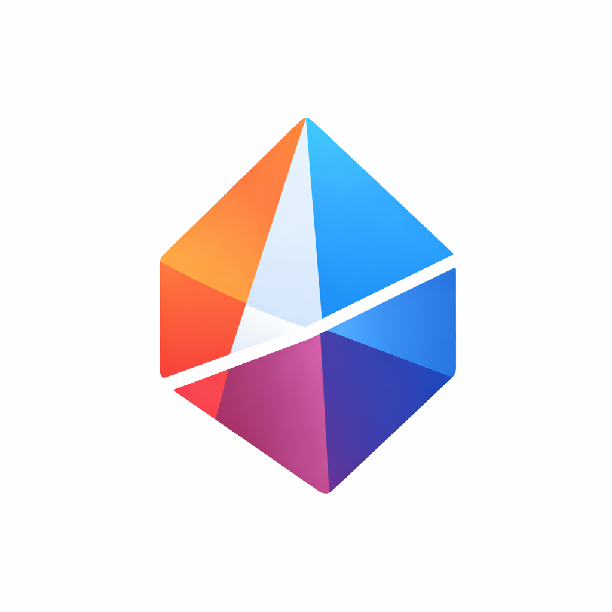

PRISMAEL COMPARADOR DE MEDIOS CON IA
Analizamos automáticamente 23 medios para detectar enfoques editoriales, sesgos y tendencias en tiempo real.
Entiende cómo te cuentan la actualidad.
Prisma compara titulares de múltiples medios para detectar tendencias, enfoques y temas dominantes. Más contexto. Menos ruido.
Prisma es un proyecto independiente que utiliza inteligencia artificial para analizar cómo distintos medios cuentan la actualidad. No genera noticias ni opinión: solo agrupa titulares existentes y aplica análisis semántico para facilitar una visión más amplia.
"Si varios medios hablan de lo mismo, compararlos ayuda a entender mejor qué está ocurriendo en el mundo."
Como lector habitual de prensa y profesional técnico, me interesaba explorar cómo la IA puede reducir el ruido informativo, evitar burbujas mediáticas y ofrecer una perspectiva más completa de la actualidad.
Es un experimento abierto: sin ánimo comercial ni ideológico. Solo curiosidad, aprendizaje y ganas de crear algo útil.
Prisma está en evolución constante. Se irán incorporando nuevas fuentes, mejor análisis semántico y mejoras visuales. Este es solo el comienzo.
📩 Contacto directo
ovalero@gmail.comProyecto personal creado con curiosidad, IA y muchas ganas 🙂